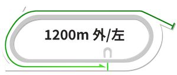
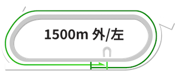
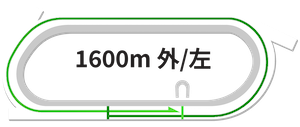
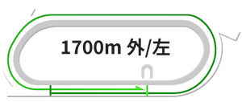
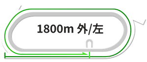
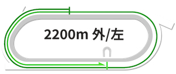
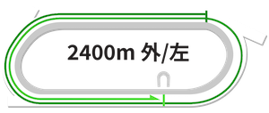

船橋競馬場コース解説
スパイラルカーブが特徴の船橋競馬場の詳細なコース分析
船橋競馬場
コースデータ
- 回り：左回り
- フルゲート：14頭
- 1周距離：内1,250m、外1,400m
- 直線：308m
- 幅員：外25m、内20m
船橋1000m攻略法｜先行有利のスピード戦
コーナーまでの距離が確保されており、枠順による大きな差は生じにくい構成となっています。ただし、逃げを狙う馬にとっては内側の枠が望ましいでしょう。このコースでは前を行く馬が粘り強く、逃げ・先行馬に有利な展開が多く見られます。
船橋1200m攻略法｜外枠有利のハイペース戦
2コーナー奥のポケット地点から発走します。内枠の馬は斜めにコーナーへ向かう形となり、スタートダッシュが遅れると他馬に囲まれる可能性があります。序盤の直線区間が長めで、ペースが上がりやすい傾向にあり、差し馬にもチャンスがあります。やや外側の枠に利があると言えるでしょう。
船橋1500m攻略法｜バランス型重視
最初のコーナーまでの距離が短めなので、内側の枠がやや有利になります。どの脚質でも戦えますが、内枠から先行できる馬は特に能力を発揮しやすいでしょう。コーナーまでの短さから、序盤は落ち着いたペースになることが多いです。
船橋1600m攻略法｜有利不利の少ないマイルコース
コーナーまでの距離が十分にあるため、外枠でも不利にはなりません。枠順による有利不利がなく、どの脚質の馬も公平に力を発揮できます。南関東エリアの1600m戦では最も良いバランスのコースと評価されています。
船橋1700m攻略法｜外枠でもほぼ不利なし
4コーナーを通過した地点からスタートします。1600mよりもさらに序盤の直線が長く、枠順による差はほぼありません。コーナーまでの距離が確保されているため、外枠からでも十分に先行ポジションを取ることができます。全体的に落ち着いたペースになりやすく、先行できる馬がやや有利となります。
船橋1800m攻略法｜直線が長く枠順不問の実力勝負
4コーナー奥からスタートします。序盤の直線が長めで、前半3ハロンは予想以上に速いラップを刻むことがありますが、枠順による有利不利は見られません。どの馬も持てる力を十分に発揮できる条件が整っており、逃げ・先行馬も差し・追込馬もバランスよく好走できます。
船橋2200m攻略法｜差しも決まる力通りの結果
発走後すぐに3コーナーに差し掛かるため、外枠の先行馬が内側に進路を取り、内枠の馬が窮屈になることがあります。先行馬が有利に見えますが、差し馬も十分に台頭でき、最終的には各馬の実力通りの結果になることが多いです。
船橋2400m攻略法｜コーナー６回でペースも落ち着く
1000mと同じ地点からスタートし、すぐに3コーナーを迎えます。逃げを狙う馬にとっては内枠が理想的ですが、序盤に多少の競り合いがあっても、1周目の直線でペースは落ち着くことがほとんどです。6つのコーナーを通過する中で全体の流れは安定し、先行できる馬に有利な展開となります。
